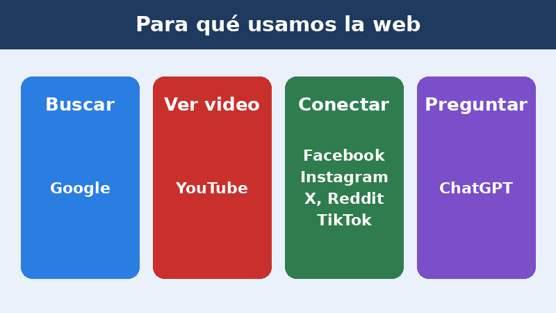

Las redes sociales dominan
Facebook, Instagram, X, Reddit y TikTok están entre las diez páginas más visitadas.
Proyecto de la asignatura Tecnologías Web, UTPL
Según los datos de Similarweb de agosto de 2026, las cinco páginas más visitadas del mundo fueron Google, YouTube, Facebook, Instagram y ChatGPT. Entre las diez primeras también aparecen X, Reddit y TikTok.

| Sitio | Tipo | Para qué se usa | Visitas mensuales |
|---|---|---|---|
| Buscador | Encontrar información, mapas y correo | 86,6 mil millones | |
| YouTube | Video | Ver y compartir videos, aprender | 30,4 mil millones |
| Red social | Comunicarse, comunidades y negocios | 11,5 mil millones | |
| Red social | Compartir fotos y videos, promocionar marcas | 7,6 mil millones | |
| ChatGPT | Asistente de IA | Preguntar, redactar y resolver tareas | 5,6 mil millones |
| X | Red social | Noticias y conversación en tiempo real | 4,6 mil millones |
| Foros | Comunidades de discusión por temas | Entre las 10 más visitadas | |
| TikTok | Video corto | Entretenimiento y promoción | Entre las 10 más visitadas |
Facebook, Instagram, X, Reddit y TikTok están entre las diez páginas más visitadas.
ChatGPT ya está entre las cinco páginas más visitadas del mundo.